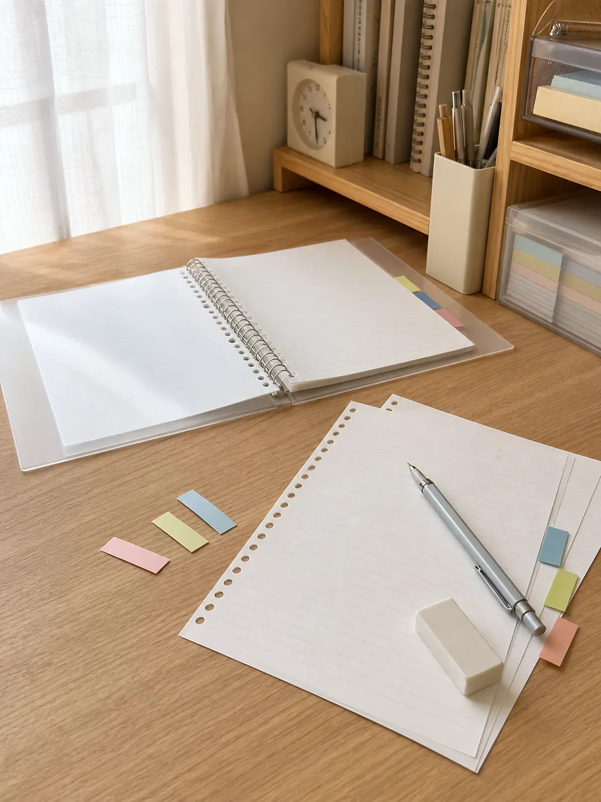
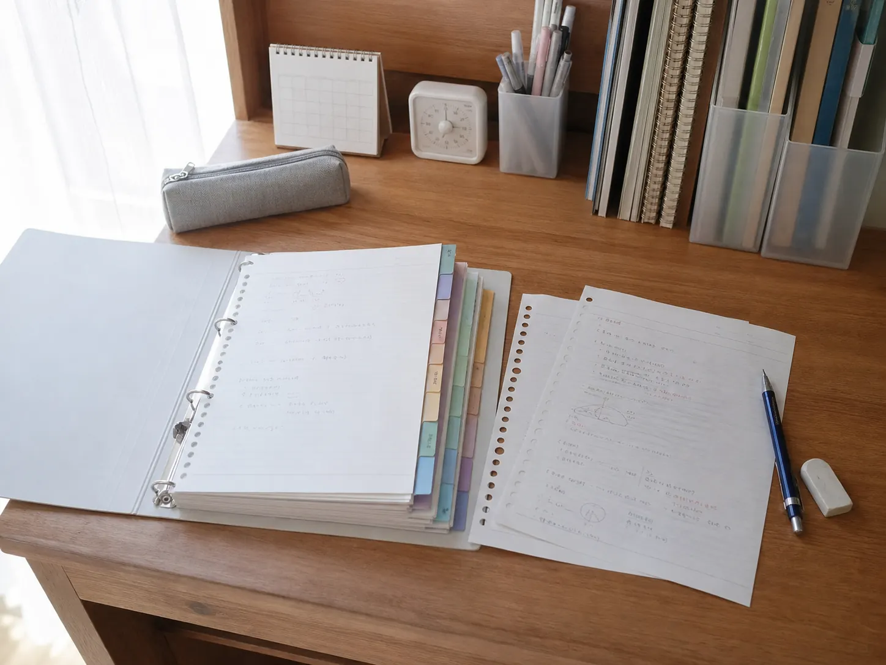
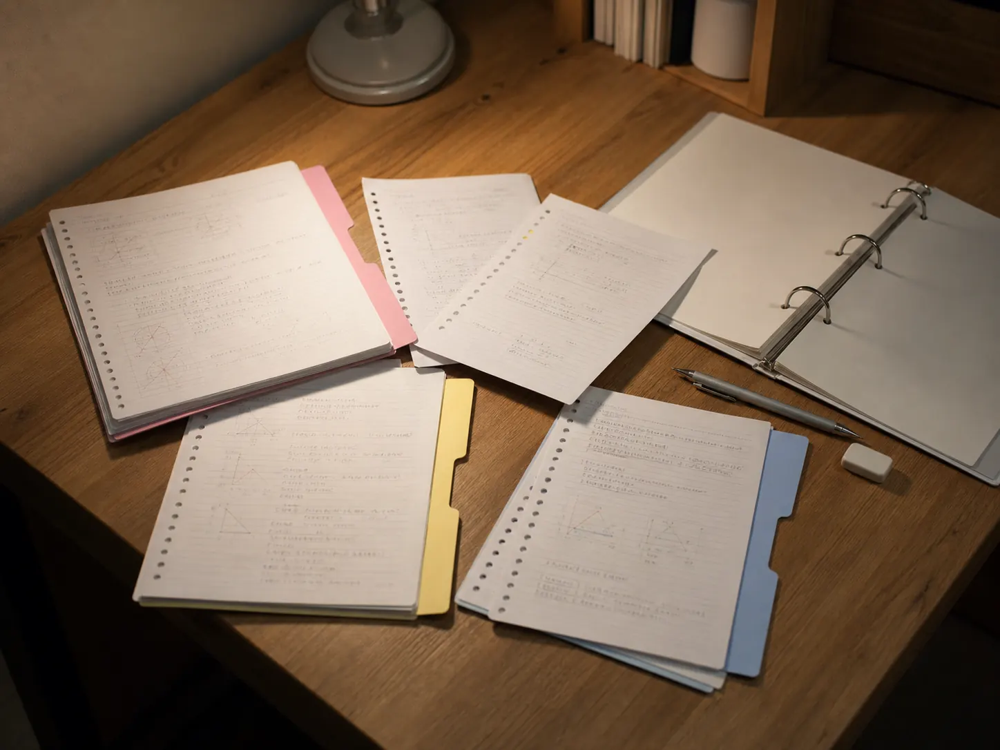
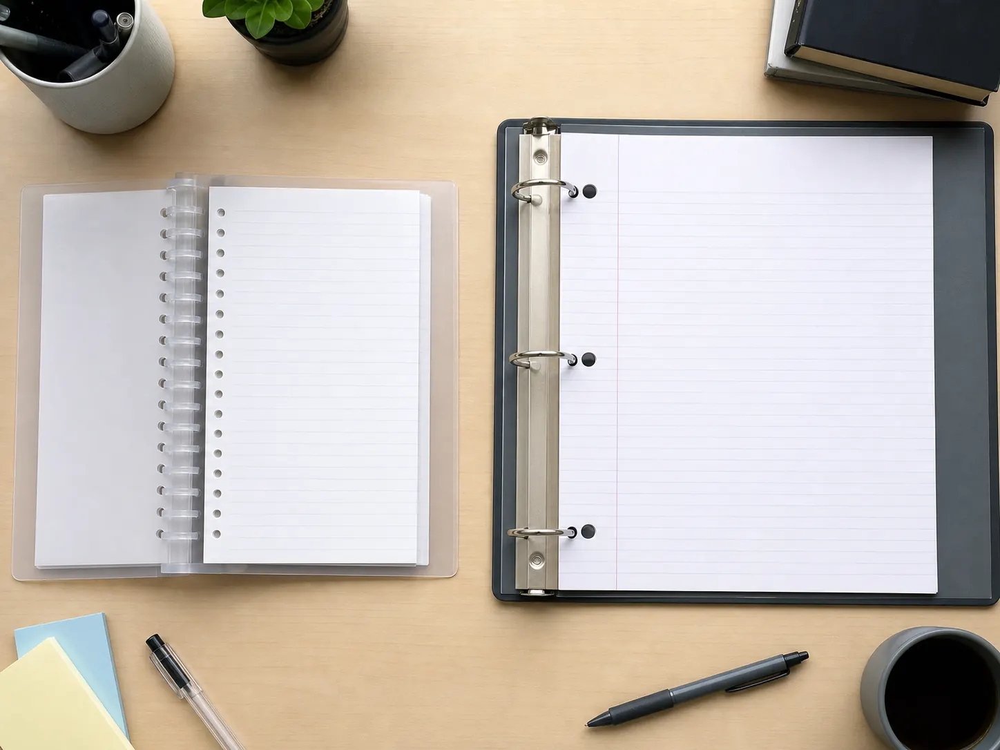

Learn the reason first. Discover the product second.
Why Do Japanese Students Use Campus Loose Leaf Paper?
Why would a student choose a stack of separate B5 pages instead of keeping every lesson permanently bound inside a notebook?
In Japan, loose-leaf paper is more than paper with holes. Combined with a binder and dividers, it becomes a study system: carry only what today requires, keep subjects apart, add explanations later, and rebuild notes when exam review changes what matters.

A brand built around learning
What Is the KOKUYO Campus Brand?
KOKUYO’s paper-making history reaches back to the company’s early account books, but Campus began as a student notebook. KOKUYO says it developed adhesive binding after 1959 and, following years of refinement, released the first Campus Notebook nationwide for students in 1975.
The brand did not remain visually fixed. A 1983 redesign made the ruling easier to recognize from the cover and introduced a friendlier identity that also found a place with working adults. Later generations changed color and layout while preserving a practical focus on writing and study.
Today, KOKUYO describes Campus as moving beyond a notebook-centered brand toward one that supports different learning methods. That broader idea helps explain why notebooks, loose-leaf paper, binders, planners, and study accessories can all sit under the same name.
The page is not permanent
Why Loose-Leaf Culture Fits Japanese Study
A bound notebook gives every page a fixed neighbor. Loose leaf does the opposite: it lets the student decide what belongs together after writing. That small difference can change how a course is organized.
- Separate classes with dividers inside one binder.
- Carry only the pages needed for the day.
- Add a teacher’s handout or an extra explanation later.
- Move summaries in front of detailed lesson notes.
- Reorder weak topics into a focused exam-review sequence.
- Archive completed units while keeping the active binder light.
Not every Japanese student uses this method, and a school may have its own supply expectations. Its appeal is flexibility: notes can follow the structure of learning rather than the chronology of a bound book.

The binder is part of the method
One Binder, Several Subjects—or One Subject at a Time
Loose-leaf culture depends on more than removable paper. A student can keep several classes behind colored indexes, use a slim binder for the day, and move finished pages into a larger archive at home. Another student may dedicate one binder to a difficult subject and rearrange it repeatedly during the term.
KOKUYO’s current Campus range explicitly encourages choosing a binder and loose-leaf combination to suit the learner. Some B5 Campus binders are designed to fold back like a notebook and hold multiple sections without the bulk of a traditional large ring binder. The exact system is personal; the cultural pattern is treating organization as part of studying rather than as cleanup after studying.

Review changes the order
Why Rearranging Pages Helps at Exam Time
Lessons arrive in calendar order, but understanding rarely does. A concept from week eight may clarify something written in week two. With loose leaf, students can place those explanations together, insert a summary, or remove pages that no longer help.
This does not make the paper itself a study technique. The value comes from the decisions around it: identifying gaps, grouping related ideas, and deciding what deserves another pass. The physical act of rebuilding a section may help a learner see the course as a system rather than a stack of dates.
Writing feel is a choice
What Does “SARASARA” Paper Mean?
KOKUYO offers Campus loose leaf in several writing-feel categories. “SARASARA,” translated by the company as “Smooth,” is intended for people who want a flowing feel, quick writing, and less catching with fine pen tips. A separate “SHIKKARI” or textured option is designed for writers who prefer more feedback.
For the original paper used with the B5 dot-ruled sheet referenced in KOKUYO’s binder documentation, the company says the Smooth paper is resistant to bleeding, helps prevent ink from showing through to the reverse, and is acid-free for long-term storage. These are KOKUYO’s stated paper characteristics; results can still vary with ink, nib, pressure, and writing conditions.
The dot-ruled format adds another kind of support. Dots along the horizontal rules can guide columns, diagrams, and vertical divisions without turning the entire page into a visible grid.

Two paper systems
Japanese B5 Loose Leaf vs. U.S. Letter-Size Binder Paper
In Japan, B5 is a familiar student-paper size, and Campus loose leaf commonly pairs it with a 26-hole binder system. The smaller page suits compact desks and bags, while multiple rings support the edge along much of its length.
In the United States, Letter-size paper and three-ring binders are familiar school formats. Official district supply lists often request three-ring binders, ruled paper, or both, although requirements differ by school, grade, and teacher.
Neither system is inherently better. B5 multi-hole paper grows from one stationery ecosystem; Letter paper and three rings grow from another. Both let students divide subjects, insert pages, and revise an organization system after the semester begins.
Choose the kind of flexibility you need
Campus Notebook or Campus Loose Leaf?
A bound Campus Notebook preserves the order in which learning happened. It is quick to open, difficult to scatter, and satisfying when one subject fills a complete volume.
Campus loose leaf is better suited to students who expect the structure to change. Pages can move, several subjects can share a binder, and completed work can leave the daily bag. The tradeoff is responsibility: loose pages need a binder, deliberate filing, and care before they become a useful archive.
A Japanese study desk in four tools
- A wooden pencil for tactile writing and drafts.
- A familiar block eraser for correction.
- B5 paper culture shaped by desks, bags, and study.
- A loose-leaf binder for rearranging the story after writing.
Experience the study method
Try Campus Loose Leaf as a Flexible Study System
If the cultural idea appeals to you, the linked Amazon listing offers KOKUYO Campus B5 SARASARA loose-leaf paper with 6mm dot ruling, 26 holes, and 100 sheets. It is paper for a compatible binder rather than a complete binder system, so confirm that the size and hole pattern fit your setup.
Use it as an entry into the method: begin with one subject, add dates and page headings, then move or archive pages only when doing so makes review clearer.
See Campus Loose Leaf Paper on AmazonCheck the current product details, price, seller, and availability on Amazon before purchasing. Listing information can change.
Primary Sources
- KOKUYO’s official Campus Notebook history — the 1975 student launch and later brand development.
- KOKUYO’s official company history — the company’s paper-making background and Campus milestone.
- KOKUYO’s official Campus brand site — its current learning-method focus.
- KOKUYO’s official Campus Loose Leaf guide — writing-feel choices, sizes, ruling, and binder combinations.
- KOKUYO’s official B5 Campus binder specification — NO-836BTN inner paper and stated Smooth-paper characteristics.
- Pinellas County Schools’ official supply list — an example of U.S. elementary binder and ruled-paper supplies.